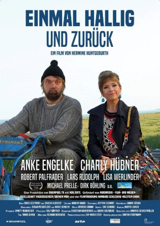

#9765 Einmal Hallig und zurück
 
 IMDB-Wertung: 6.0 / 10
IMDB-Wertung: 6.0 / 10  Metascore: 0
Metascore: 0 
Fanny, a reporter specializing in social gossip, unwittingly stumbles upon an environmental scandal involving a powerful politician. When her not very subtle investigations draw too much attention, she is sent to a tiny off shore island for her own safety. Here she meets Hagen, an uncouth bird enthusiast. He is a man of few words and nearly driven to distraction by this newly arrived reporter woman with her endless chatter. Fanny, driven by her curiosity of a journalist, tries to find out more about Hagen and gradually realizes that there is much more to him than his rough exterior. When she confides in him and tells him her real reason for being on the island, they find that they have much in common.
Jahr: 2015
Dauer: 87 Minuten
FSK: 6
Land: Deutschland Studio: Rough Trade DistributionTonspuren:
Untertitel:
Auflösung: 1080p (1920x1080) Größe: 4044 MB
Genre: Drama, Komödie, Liebe
Regisseur: Hermine Huntgeburth
Drehbuch: Sascha Albrecht, Chris Geletneky
Soundtrack: Andreas Grimm
Darsteller:
 Anke Engelke als Fanny Reitmeyer
Anke Engelke als Fanny Reitmeyer- Robert Palfrader als Bernd Fliegner
- Johanna Bantzer als Silke
- Lisa Werlinder als Gretchen Heinze
- Charly Hübner als Hagen Kluth
- Dirk Böhling als Jon Espersen
- Ole Fischer als Piet
- Jan Peter Heyne als Helge
- Oliver Michael Jaksch als Sören
- Gerd Karau als Wattführer Johann
- Ulrike Knospe als Silvia
- Dagmar Leesch als Wirtin Heike
- Dominik Maringer als Jansen
- Anne Müller als Jana
- Jakob Plutte als Haffner
- Michael Prelle als Jürgen Heinze
- Lars Rudolph als Friedjolf
- Martina Struppek als Dagmar
Datei: X:\2015(A-F)\Einmal Hallig und zurück (2015, FSK6, 1920x1080).mkv seit 27.10.2018
Festplatte: HD 2015(A-Z)
 Es gibt insgesamt 143 Filme in der Gruppe '2015(A-F)'
Es gibt insgesamt 143 Filme in der Gruppe '2015(A-F)'